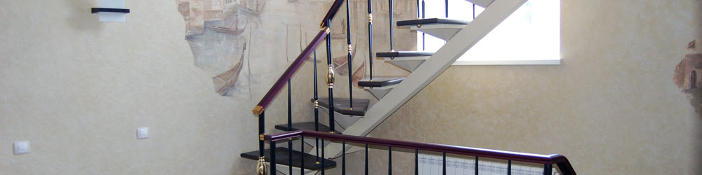
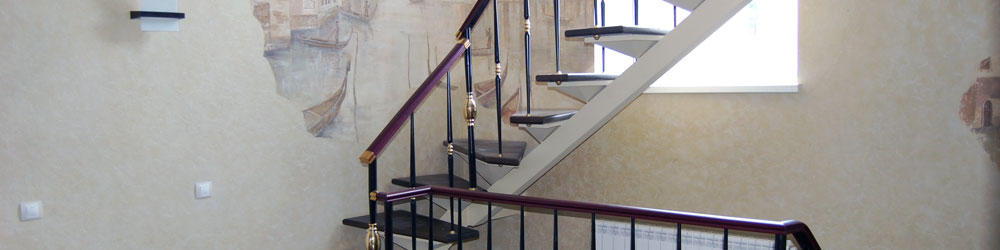

Стальные двери
Изготовим стальные двери любой модификации, дизайна и размера. Вы можете заказать у нас сплошную дверь, либо оригинальную - остекленную , либо дверь украшенную коваными элементами , которая будет служить украшением Вашего дома, будет индивидуальна и неповторима. Какую бы дверь Вы не выбрали, главное что мы гарантируем - это надежную защиту Вашего дома, высокую звуко и теплоизоляцию.Все наши двери сделаны из сложно гнутого профиля, утоплены, имеют два контура уплотнения (1-уплотнитель - микропористая резина по контуру полотна, 2-ой дополнительный по коробке), обладают отличной тепло и звукоизоляцией. Шарниры только на опорном подшипнике в количестве трех штук исключают перекосы, следовательно, замки не заедают, полотно плотно прилегает к коробке. Съемный декоративный нащельник позволяет легко обслуживать дверь - менять панель, врезать замок. Внутри дверей силовой каркас (ребра жесткости) и утеплитель пеноизол. Два штыря антисреза. Дверное полотно и коробка изготовляются из холоднокатаного стального листа толщиной 2мм, вопреки распространенному мнению, что «чем толще, тем лучше. От толстых листов металла может быть больше вреда, чем пользы. Они утяжеляют дверное полотно, создают большую нагрузку на петли - со временем такую дверь с большей вероятностью перекосит. Конструкция дверной коробки должна иметь ступенчатую форму сечения, образуя по периметру контуры, которые проклеиваются резиновыми уплотнителями, препятствующие возникновению воздушных потоков между полотном и коробкой. Так же после установки двери, места стыковки стен и коробки заливаются монтажной пеной. Теплоизоляция достигается за счет заполнения минватой типа URSA, дверного полотна, а по необходимости и дверной коробки.
Двери покрыты полимерно-порошковым покрытием (ППП) - полимерный порошок напыляют на внешнюю поверхность стальных листов двери и короба. Потом дверь помещают в термокамеру, где порошок под действием высокой температуры плавиться. В итоге получается высокопрочная пленка, которую трудно поцарапать и тем более поджечь. ППП характеризуется высокой декоративностью и хорошим сцеплением с окрашиваемой поверхностью. Обладает стойкостью к воздействию воды и химических компонентов (минеральные масла, бензин, кислот, щелочей и т.д.), стойкость к механическому воздействию (ударопрочность, абразивостойкость). Стойкость к УФ-излучению, к высоким температурам.
Возможность установки различных видов внутренней отделки, которая выбирается исходя из индивидуальных предпочтений покупателя. -панели МДФ-влагоустойчивы, сохраняют форму при температурных колебаниях и устойчивы к механическим воздействиям. В качестве декоративной отделки используется:
1). пленка ПВХ точно имитирует натуральное дерево, обладает высокой износо-устойчивостью.
2). шпон натурального дерева менее износостойкий чем пленка ПВХ, но более натуральный и эстетичный.
Также возможно изготовить панели из натурального дерева, обладающие высокой экологичностью и богатством внешнего вида.
Предлагается три варианта исполнения двери: «НОВОСЕЛ», «КЛАССИКА», «АВАНГАРД».
«Новосел»- коробка изготавливается из сложно гнутого профиля 2мм, по контуру коробки используется два уплотнителя. Ширина коробки 100мм. Полотно собирается из гнутых Z-образных профилей 2мм, обеспечивающие необходимую жесткость двери.
Данная конструкция двери это оптимальный выбор цены и качества, обеспечивающая необходимые требования.
«КЛАССИКА» - коробка изготавливается из сложно гнутого профиля 2мм, по контуру коробки используется два уплотнителя. Ширина коробки 120мм. Полотно собирается из гнутых Z-образных профилей 2мм, обеспечивающие необходимую жесткость двери.
Полотно двери позволяет установку всевозможных накладок от МДФ 6, 10, 16мм, ДСП, до массива 20мм. Таким образом, полотно может иметь толщину от 55 до 92мм. Что позволяет обеспечить желаемую звукоизоляцию, теплопроводность и достойный эстетический вид.
Существует возможность увеличения глубины коробки до 270мм.
Дверь приваривается к анкерным штырям.
«АВАНГАРД» - двери этого модельного ряда обладают повышенной взломостойкостью. Дверная коробка из гнутого профиля сложной формы имеет высокую жесткость.
Коробка изготавливается из сложно гнутого профиля 2мм, по контуру коробки используется два уплотнителя. Ширина коробки 120мм. Полотно собирается из П- образных профилей 2мм.
Полотно двери позволяет установку всевозможных накладок от МДФ 6, 10, 16мм, ДСП, до массива 20мм. Таким образом, полотно может иметь толщину от 55 до 92мм.
Существует возможность увеличения глубины коробки до 270мм.
В городских условиях дверь чаще не взламывают, а вскрывают. Рекомендуем ставить два замка, один цилиндровый, второй сувальдный. К первому типу замка очень сложно подобрать комбинацию ключа. Второй, более массивный выполняет силовую функцию и является основным защитным элементом.
CISA – вариант с перекодировкой. Верхний цилиндровый на 2 оборота ключа. Нижний сувальдный замок с перекодировкой, т.е. при потере ключа нет необходимости менять замок, либо при сдаче квартиры после ремонта. При покупке замка клиент кроме рабочего комплекта ключей получает в запечатанном конверте дополнительный комплект ключей с кодом, отличным от кода рабочего ключа, а так же специальный инструмент. При введении этого инструмента в замок код замка автоматически обнуляется, делая невозможным использование прежних ключей. Операция проводится при открытой двери.
MOTTURA – 2 ключевая с блокировкой. При закрывании нижнего цилиндрового замка блокируется верхний сувальдный.
Ваша дверь будет уникальной, не похожей на другие металлические двери, мы можем вам это гарантировать.
Противопожарные двери
Пожар. Пожалуй, одно из самых страшных слов. Наверное, ничего не может быть страшнее пожара. А представьте ситуацию, что пожар случился в общественном здании, административном или офисном, в самый разгар рабочего дня, когда внутри здания находятся сотни людей... Именно поэтому в последнее время особое внимание уделяется противопожарной защите зданий такого типа. И противопожарная дверь здесь выступает как основная защита от огня, предотвращающая его распространение в следующие комнаты. Противопожарная дверь – это конструкция способная на протяжении определённого времени препятствовать распространению пожара в последующие помещения. Установка такой двери даёт вам гарантию того, что вы не лишитесь здания целиком. Огонь просто не сможет распространиться, дверь блокирует комнату, в которой возникает пожар! При этом во время пожара дверь можно открыть из нутрии без использования ключа. Их целесообразно устанавливать в помещениях с большим количеством работающих электроустановок (щитовые, серверные), огнеопасными смесями (заводских или торговых хранилищах), различных торговых комплексах и больницах (на лестничных пролетах) и т. д.Проектировщики крупных общественных зданий разрабатывают целые комплексы мер по недопущению возгораний. Сюда входят и неподдающиеся горению материалы, и запрещение использования материалов, которые при горении могут выделять токсичные вещества и включение в план здания путей эвакуации и противопожарных конструкций. Такие конструкции делятся на две основных категории: общие и местные. К общим противопожарным конструкциям здания относятся капитальные стены, противопожарные перегородки и перекрытия. К местным конструкциям можно отнести двери, люки, складские и гаражные ворота и т.д.
Препятствовать распространению пламени и дыма в первую очередь призваны противопожарные двери. Ещё не так давно противопожарная дверь, устанавливавшаяся в административных и производственных помещениях, представляла собой раму из толстого бруса, заполненную изнутри минеральной ватой (иногда во внутреннюю полость устанавливали также листы асбеста). Снаружи такая рама обшивалась неокрашенными оцинкованными железными листами. Вот и все. В таком неприглядном виде противопожарная дверь и устанавливалась в проем. Несмотря на свой непрезентабельный внешний вид, свою задачу такая дверь выполняла. Однако представить ее в интерьере современного помещения, будь то офис, цех или склад совершенно невозможно. Противопожарные металлические двери, предлагающиеся сегодня на рынке изготовителем двух видов: одностворчатая и двухстворчатая, с угловой и торцевой коробкой, а по своему внешнему виду противопожарная дверь многим не уступают стандартным дверям, при этом намного превосходя их по качеству. Ведь противопожарная дверь должна обладать двумя основными свойствами. Во-первых, не пропускать пламя, жар, дым и токсичные вещества. Во-вторых, она должна иметь такую конструкцию и быть изготовленной из таких материалов, которые не допустят коробления дверного полотна или дверной коробки под воздействием жара и пламени. Именно поэтому на производство противопожарных дверей идет сталь очень высокого качества и повышенной толщины. Жаростойкость подобных дверей достигается за счет применения специального внутреннего заполнителя. Компоненты и состав противопожарного заполнителя у каждой компании-производителя свой и они держатся в строжайшей тайне – ведь это самое настоящее ноу-хау.
Однако ни одно даже самое высококачественное изделие не может сопротивляться пламени бесконечно. Именно поэтому существуют Строительные Нормы и Правила (СНиПы), по которым огнестойкость дверей делится на несколько категорий.
И вот именно из-за этих СНиПов зачастую возникает путаница, часто ведущая к серьезным проблемам. Изначально (СНиП 2.01.02-85) противопожарные двери делились по своей огнестойкости на четыре категории. При этом время огнестойкости указывалось в часах: ): 0.25ч. (15 мин); 0.6ч. (36 мин); 0.75ч. (45 мин) и 1.2ч. (75 мин). Однако в 1998 году были введены новые СНиПы, несколько более понятные и упрощенные. И согласно новым правилам противопожарные двери делятся на три основных категории огнестойкости: 15 мин., 30 мин., 60 мин.
А проблема заключается в том, что довольно часто проектировщики при разработке здания закладывают установку противопожарных дверей по старым СНиПам. И если будет указана вторая категория огнестойкости двери (0.6ч. (36 мин)), а застройщик установит двери второй категории огнестойкости по новым СНиПам (30 мин) – то возникнет ситуация, при которой огнестойкость установленных противопожарных дверей не соответствует заложенной в проекте. Разумеется, пожарная инспекция вправе не допустить здание к эксплуатации и потребовать замены установленных дверей на соответствующие указанным в проекте. А по новым СНиПам под указанную категорию подойдут лишь двери категорией огнестойкости в 60 мин. Понятно, что это повлечет за собой огромные затраты. Поэтому следует быть особенно внимательным и обращать внимание на класс огнестойкости противопожарных дверей ещё на стадии проектирования, до покупки.
Разумеется, стоимость противопожарной двери будет выше стандартной металлической двери. Иногда намного выше. Однако, как известно, на безопасности не экономят.